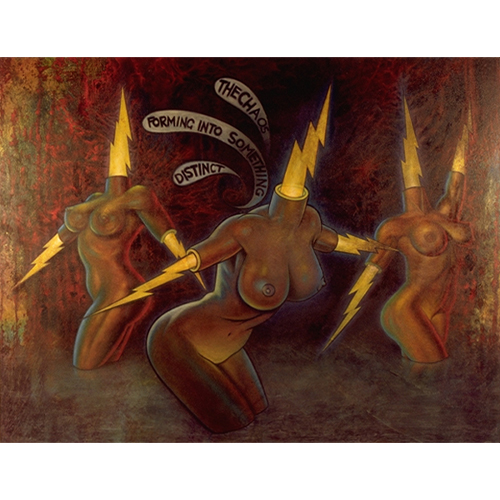

Exhibitions
Delusionville, Allouche Gallery, New York, New York, US, October 11–November 25, 2018.
Literature
Ron English, Popaganda: The Art & Subversion of Ron English (San Francisco: Last Gasp, 2001), p. 112. ISBN 1-887128-60-3.
Notes
This work is a collaboration between Ron English and Daniel Johnston.
This work is documented in the online PDF catalogue for Ron English: Delusionville (Allouche Gallery, 2023), available here, accessed April 5, 2026.
Also known as Lightning Torsos.
In the Delusionville exhibition catalogue, the year for this work is incorrectly listed as 2007.